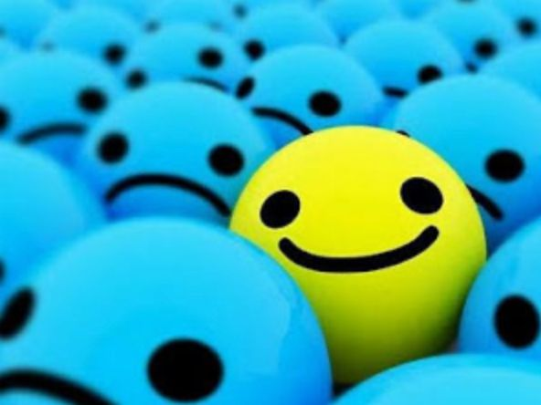
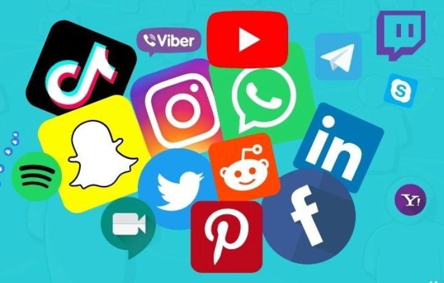
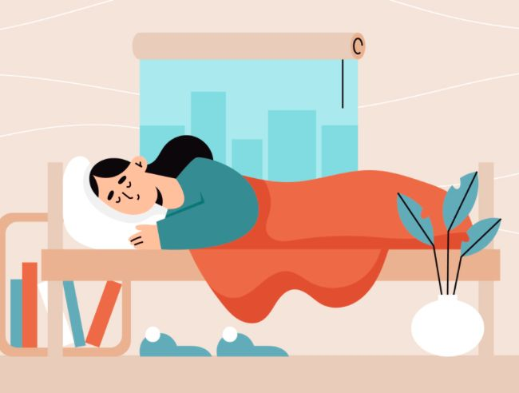
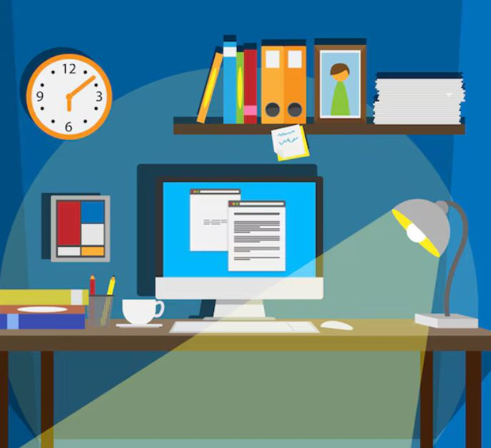
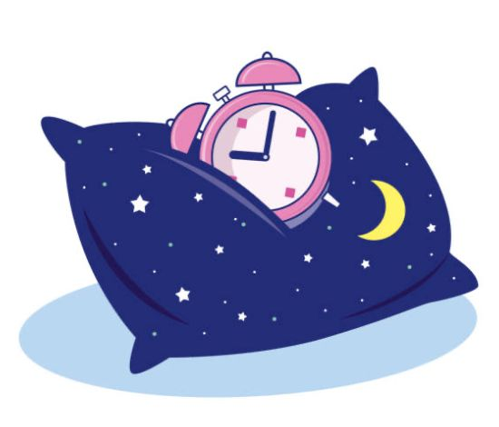

Es importante que el alumno este siempre con buenas expectativas ante la carga de trabajo. Ya que, si este busca solamente que desaparezca el estrés en lugar de aceptarlo, podría causar que este aumente cuando podría mantenerse o hasta incluso disminuir.
SE OPTIMISTA COMO PINKIE PIE

Los dispositivos electrónicos pueden ser un gran factor para las distracciones, ya que con estos se tiene el acceso a las redes sociales y los videojuegos. Estos pueden hacer que el adolescente se distraiga y evite realizar sus actividades, lo cual lo llevará a tener una mayor carga de tareas con muy poco tiempo para terminarlas.
ASÍ QUE APAGA TU TELEFONO, SI TIENES IPHONE NO TE PREOCUPES SOLO ESPERA QUE SE DESCARGA EN 1 MINUTO

Es importante que, ante la carga inmensa de pueden tener los alumnos de trabajo, tomen descanso de vez en cuando. Esto porque, si un alumno lleva ya mucho tiempo trabajando en asuntos escolares, se puede atorar y ya no poder continuar con este porque su cerebro esta agobiado. Cuando esto sucede es importante que respire profundo, sálgannos al patio y se tome 10min para respirar aire fresco; después que vuelva y continue con la actividad, esto hará que el cerebro se despeje y pueda trabajar mejor.
RESPIRA, QUE NO QUEREMOS QUE TU INTELIGENCIA SE VUELVA LÍQUIDA

Para que el estudiante pueda tener una mayor concentración y poder evitar el estrés, es importante que tenga un ligar establecido para los estudios. Ayuda a que se evite distracciones de la casa, como ruidos y olores, y causará que se enfoque solamente en el trabajo.
ENTONCES NO, NO ES UNA OPCIÓN QUE ESTES ESTUDIANDO DONDE TU MAMÁ VE SUS K-DRAMAS, YO SE QUE ESTAN BUENOS PERO ENFÓCATE
Parece obvio pero no todos pueden llegar a seguirlo por su cuenta. Cuando un estudiante organiza sus tiempos para estudiar dependiendo de la temporada del semestre, puede evitarse muchos problemas, ya que podrá dominar la escuela sin dificultades y tendrá tiempo para poder realizar otras actividades además de las escolares.
AHORA, USA ESA HORA LIBRE PARA ESTUDIAR EN LUGAR DE JUGAR ROBLOX O CLASH, PORQUE YO SE QUE LO JUEGAS

Es importante para los estudiantes que tengan horarios establecidos de sueño y que eviten pasarse de la hora establecida o cambiarlos, ya que, si se esta en temporada demándate de exámenes o proyectos y se tiene los horarios desajustados puede causar falta de energía, llevándolo a posible estrés severo por falta de concentración debido al sueño. Además de que existe la posibilidad de que, por la falta de sueño y pocas horas para dormir, uno puede amanecer de mal humor y afectar el rendimiento del día siguiente, incluso si es solamente una vez.
HAZME CASO, QUE TE DIGO ESTO POR EXPERIENCIA. SI NO DUERMO MIS 8 HORAS DE BEAUTY SLEEP SOY EL DEMONIO ENCARNADO